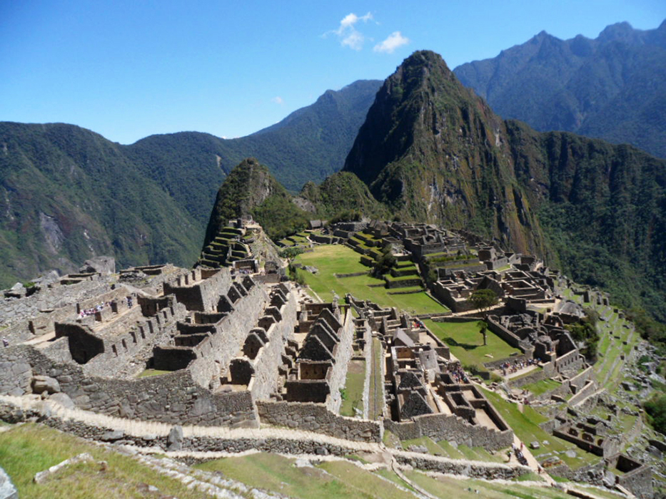
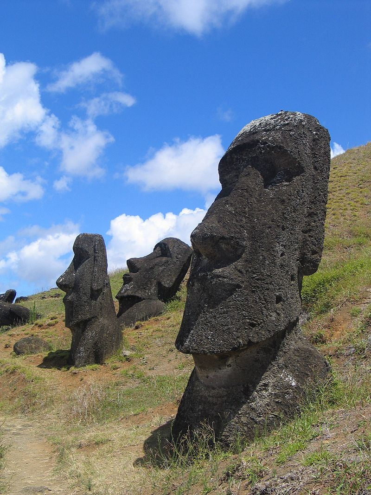

Travel page
#OstaniDoma
Welcome/Dobrodošli
Rio de Janeiro

Opće
Rio de Janeiro (Siječanjska rijeka na portugalskom) je ime grada u državi Rio de Janeiro
u jugoistočnom Brazilu. Rio de Janeiro je bivši glavni grad Brazila (od 1763. do 1960.) i Portugalskog Carstva (od 1808. do 1821.). Spektakularno
prirodno okruženje, karnevali, samba i plaže kao što su Copacabana, Ipanema i Leblon su ono po čemu se prepoznaje Rio. Ipak, najpoznatija atrakcija
i zaštitni znak grada je sigurno statua Isusa, poznata kao Cristo Redentor na brdu Corcovado. Međutim, tu su i brdo Šećerna Glava sa žičarom koja
ide do njegovog vrha, zatim Sambodrom za vrijeme karnevala, kao i stadion Maracanã, jedan od najvećih na svijetu. Rio također posjeduje i dvije najveće
šume u urbanom području, Floresta da Pedra Branca i Floresta da Tijuca.
Povijest
Zaljev Guanabara,
mjesto budućeg grada, prvi put su vidjeli portugalski istraživači u ekspediciji koju je vodio Gaspar de Lemos,
20. siječnja, 1502. godine, odakle i potiče naziv Rio de Janeiro (Siječanjska rijeka). Legenda kaže da su moreplovci
ovaj zaljev nazvali rijekom zato što su i mislili da je u pitanju rijeka, međutim, to se teško može dogoditi iskusnim
moreplovcima. Istina je da se u to vrijeme riječ rijeka koristila za sve veće vodene površine koje ulaze u kopno.
Ferdinand Magellan je 1519. godine, u zaljevu dopunjavao zalihe, a francuski krijumčari su ga koristili za šverc drveta
pernambuco. Kada je francuski vitez Nicolas Durand de Villegaignon došao u zaljev sa 600 vojnika i kolonista, osnovao je prvo
europsko naselje u ovom dijelu Brazila, pod nazivom Francuski Antarktik (France Antarctique). Kolonisti su uglavnom bili Francuzi i Švicarci.
Grad je podijeljen na:
Povijesni centar (Centro);
Južna zona - turistička zona, sa poznatim plažama;
Sjeverna zona - industrijska zona;
Zapadna zona sa novim distriktom Barra da Tijuca.
Machu Picchu

Opće
Machu Picchu
(kečuanski jezik: Machu Pikchu, što znači "Stari vrhovi") je sveti grad Inka
("Izgubljeni grad Inka") smješten na najvišem dijelu istočnih Andi u Peruu, ili točnije,
na istočnim padinama planinskog lanca iznad doline rijeke Urubamba i neposredno iznad naselja
na oko 1300. godine, ali je ostao skriven sve do 1911. godine kada ga otkriva Amerikanac Hiram Bingham.Machu Picchu,
poput drugih arheoloških lokaliteta
doline Urubamba (Ollantaytambo, Runcuracay, Sayacmarca, Phuyupamarca, Huiñay Huayna, Intipucu, i dr.),
svjedoči o nekadašnjem veličanstvenom carstvu Inka
Odlike
Machu Picchu ima površinu od 32.500 hektara i izgrađen je u tradicionalnom Inka stilu suhozida.
Arheolozi danas tvrde da Machu Picchu nije bio grad u klasičnom smislu riječi jer nisu pronađeni ostaci birokratske uprave,
trgovine ili vojne utvrde. Najvjerojatnije je građen kao carski posjed i religijsko utočište ili pak kao tajni ceremonijalni grad.
Ostaci Machu Picchua odaju carski stil Inka kakav se može zapaziti i na drugim mjestima najveće države Novoga svijeta prije dolaska Europljana.
Ono što je kod Machu Picchua neobično jest okoliš u kojem se nalazi: smješten je na brdu usred bujne vegetacije koju natapa rijeka. Zapravo,
postoje tri brda koji čine Machu Picchu: Huayna (Wayna) Pichu, Machu Picchu i brdo na kojem se nalazi ostaci naselja. To brdo sa ostacima se danas
naziva Machu Picchu što je pogresno, ali je u cijelom svijetu prihvaćeno. Preko brda Machu Picchu (originalnog) vodi "Inka put" od Cusca koji traje nekoliko dana.
Uskršnji otok

Opće
Uskršnji otok ili Rapa Nui , lokalnom jeziku poznat kao
Te Pito O Te Henua, odnosno Isla de Pascua na Španjolskom, otok je na jugu Tihog oceana (Polinezija) koji upravno pripada Čileu.
Nalazi se oko 3.600 km zapadno od Čilea. Nalazi se na 27°09′ južne geografske širine i na 109°27′ zapadne geografske dužine, u ravnini
s Čileanskim gradom Kaldere, sjeverno od Santiaga.
Otok je otprilike trokutasta oblika, površine 163,6 km2 i populacije od 3.791 od kojih 3.304 žive u glavnom gradu Hanga Roi.
Otok je sačinjen od tri vulkana Poike, Rano Kau-a i Terevake. Najpoznatiji je po svojim mnogobrojnim moai, golemim kamenim kipovima koji se prostiru duž obale.
Rapa Nui su oko 300. godine naselili Polinežani, vjerojatno iz Marquesasa, koji su sa sobom donijeli gotovo u potpunosti kulturu kamenog doba.
Prema tradiciji otoka, kolonizatorsku ekspediciju od pedeset ljudi u dva kanua vodio je kralj Hotu Matu'a. Svi kulturni elementi Rapa Nuija prije dolaska
Europljana ukazuju na to da nije bilo dolaska drugih skupina, te su isključene pretpostavke o dolasku naprednijih doseljenika iz Južne Amerike, Melanezije,
Egipta, ili odnekud drugdje.
Između 10. i 16. stoljeća otočka zajednica se umjereno povećavala, s malim naseljima
koja su nicala duž gotovo cijele obale. Visoka kulturna razina ovog društva je najpoznatija po njegovim monumentalnim kamenim figurama,
moai i ahu. Danas je otok poprilično pust, s biljem koje rijetko formira čak i nisko raslinje ili višu travu. Prije, otok je sadržavao mnogobrojne šume palmi
te je osnovna pretpostavka da su urođenici iskoristili sve šume na otoku kako bi izradili kipove. Nakon što se dugo vjerovalo, zahvaljujući Arheološkim istraživanjima,
da su za izradu kipova korišteni drveni kalupi, te da ih se donosilo na trenutne lokacije pomoću drvenih okvira za vrijeme obreda (Rapanuiska se tradicija
metaforički odnosila na duhovnu snagu); danas se zna kako su kipovi pomjerani zahvaljujući samo tri skupine ljudi koje su užadima klatile moaije tako da su
promatračima sa strane izgledali kao da "bogovi" hodaju gegajući se.
Još jedna činjenica je da su klimatski uvijeti za vrijeme manjeg ledenog doba
(od oko 1650. do 1850.) također vjerojatno doprinjeli nestajanju šuma na otoku,
ali i strana vrsta polinezijskih štakora koji su se hranili orasima palmi.
Source:www.wikipedia.com